仏教の心【全てうまくいく】 (CH07) script 30/30
updated_at: 2026-01-12T23:40:25.903078Z
URL例:
/ep/CH07/001/thumb/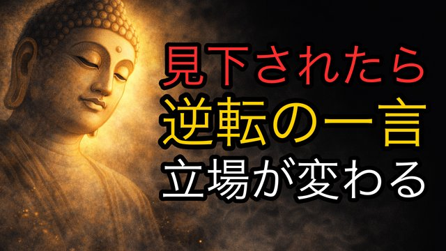  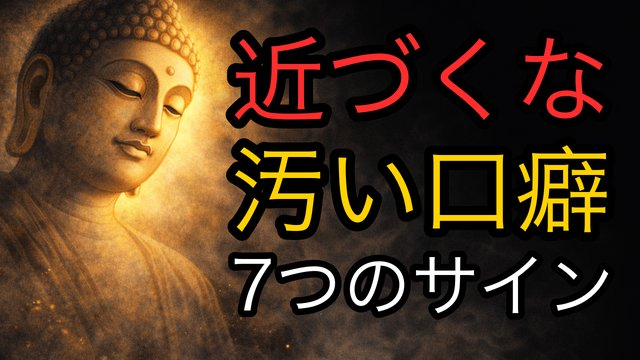
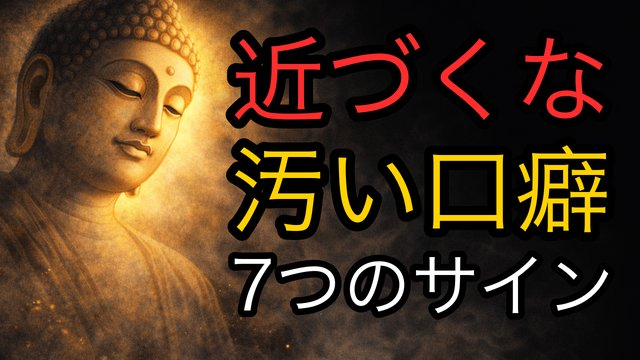  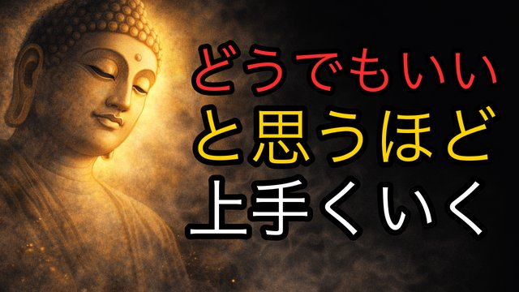
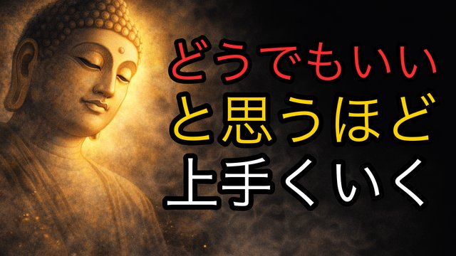  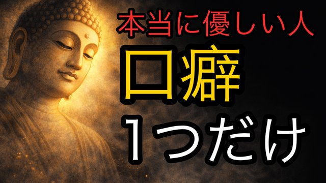
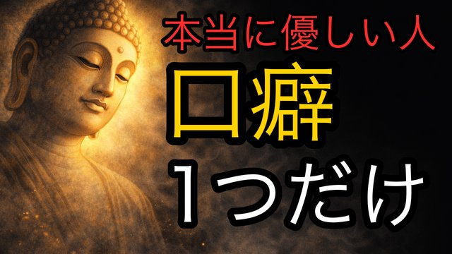 
 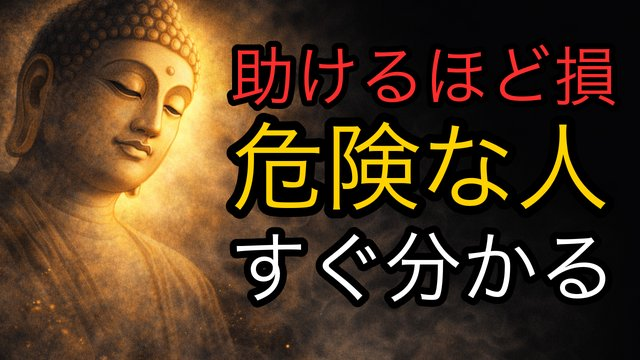
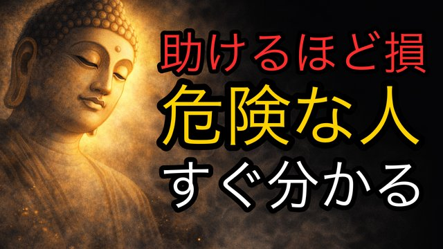 
 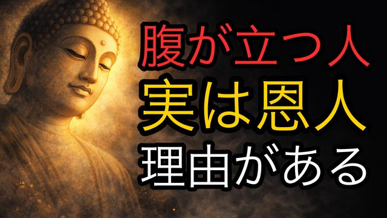
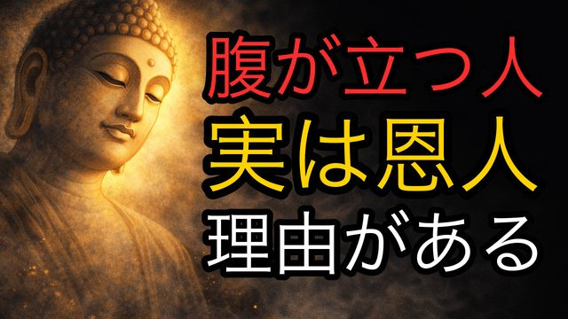 


 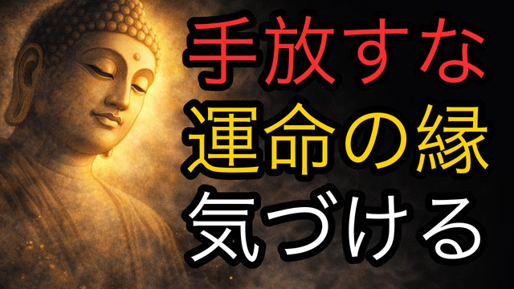
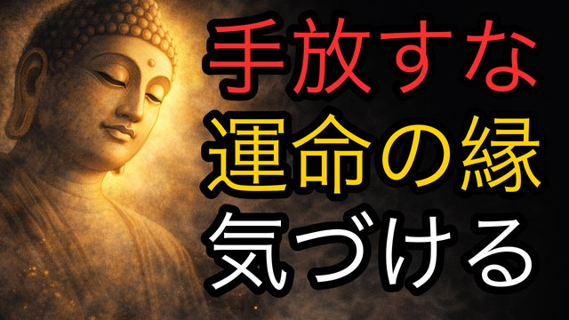 


 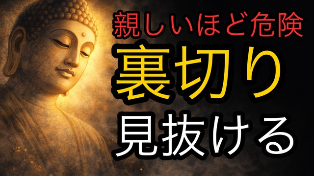
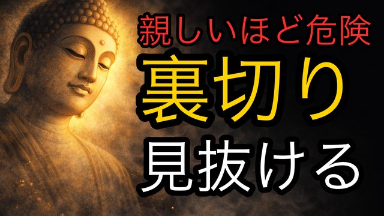 
CH07-001
【逆転の一言】見下された時に使えるブッダの知恵
script ✓画像 —
CH07-002
【人生が変わる】悪口・批判・否定を気にしない方法
script ✓画像 —
CH07-003
心が汚い人が必ず発する7つの言葉
script ✓画像 —
CH07-004
心配ばかりしてしまうあなたへ｜心が軽くなる仏教の教え
script ✓画像 —
CH07-005
「どうでもいい」と思うと心が軽くなる理由
script ✓画像 —
CH07-006
【もう苦しまなくていい】許さなくていい生き方
script ✓画像 —
CH07-007
優しい人の口癖とその深い意味
script ✓画像 —
CH07-008
誠実な人が無意識に使う魔法の言葉
script ✓画像 —
CH07-009
【因果応報】あなたを苦しめた人が迎える結末
script ✓画像 —
CH07-010
【絶対に助けてはいけない人】関わった瞬間に不幸になる相手
script ✓画像 —
CH07-011
【もう舐められない】見下されたときの最強の一言
script ✓画像 —
CH07-012
【正論よりも大切なもの】常識が人を傷つける理由
script ✓画像 —
CH07-013
【感謝すべき敵】腹が立つ人への仏教的対処法
script ✓画像 —
CH07-014
【警告】こんな子供は親を不幸にする…今すぐ縁を切れ
script ✓画像 —
CH07-015
辛いときに口にすると心が軽くなる仏の言葉
script ✓画像 —
CH07-016
【偶然じゃない】嫌いな人との出会いに意味がある
script ✓画像 —
CH07-017
【言い返すな】上から目線の人への返し方
script ✓画像 —
CH07-018
【話しすぎ注意】言葉が多いと不幸になる
script ✓画像 —
CH07-019
【手放すな】運命の縁を教えてくれる言葉
script ✓画像 —
CH07-020
【老後の備え】子供に絶対に渡してはいけない5つのもの
script ✓画像 —
CH07-021
【許すと不幸になる】絶対に許してはいけない人間関係
script ✓画像 —
CH07-022
【心を守る技法】攻撃的な人への最も賢い返し方
script ✓画像 —
CH07-023
【誤解されたままでもいい理由】分かってもらえない時の心の保ち方
script ✓画像 —
CH07-024
【老後は言葉遣いで決まる】豊かに生きる話し方
script ✓画像 —
CH07-025
【心を守る一言】否定してくる人への最強の返し
script ✓画像 —
CH07-026
嫉妬する人の特徴と対処法
script ✓画像 —
CH07-027
嘘をつく人が使う5つの言葉
script ✓画像 —
CH07-028
【良くも悪くも聞き流す】心を軽くするブッダの教え
script ✓画像 —
CH07-029
【親しい人ほど危険】裏切る人の本性を見抜く方法
script ✓画像 —
CH07-030
【親の後悔】知らずにやってしまう子育ての間違い
script ✓画像 —